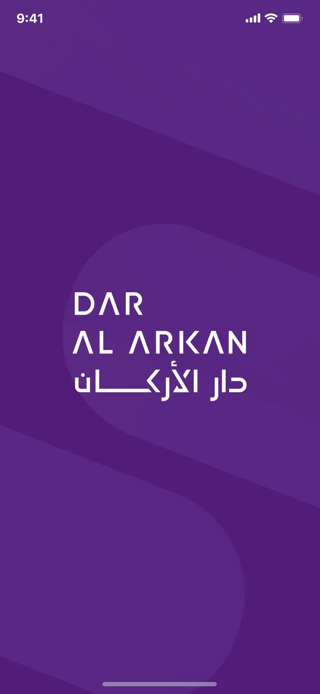
Dar Al Arkan Online · KSA · iOS & AndroidSaudi property, one app for everyone.
Designing Dar Al Arkan Online: a property app where buyers and renters search, compare and enquire, and where owners, brokers, developers and agents list homes and follow up on leads. In English and Arabic.
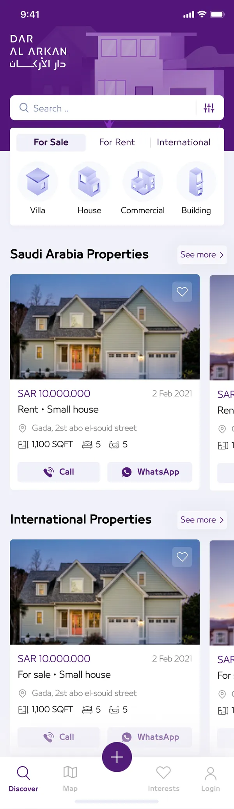
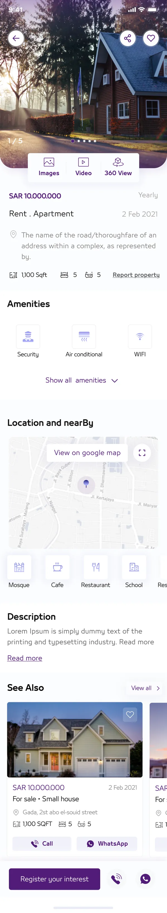
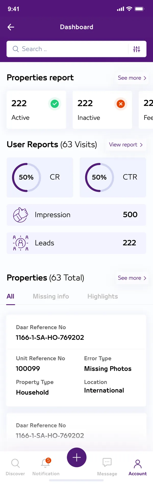
Dar Al Arkan property app
One app for the whole property market: buyers and renters search, map and enquire, while owners, brokers, developers and agents list homes and follow every lead.
One developer, many audiences, and a market that runs on trust.
Dar Al Arkan, through Thimar Al Arabiya, wanted to grow as a real estate provider in Saudi Arabia with its own online platform: web, mobile and a CRM, delivered in phases.
The mobile app had to serve two very different groups from one front door. End users want to find a home without visiting twenty of them. Owners, brokers, developers and agents want to list properties, see who is interested and act on those leads quickly, often from a car between viewings.
- My role
- UX & UI design
- Client
- Dar Al Arkan Online
- Market
- Saudi Arabia + international listings
- Platform
- iOS & Android, English & Arabic
- Scope
- 136 screens across 5 user roles
Big decisions, low trust, and two languages.
A home is the largest purchase most families make. People told us they worried about fraudulent sellers, hidden fees and photos that don't match reality, and professionals told us their tools were scattered.
Search forms that ask everything at once
Regional portals open with ten filters before you've typed a city. Our review found that a simple start, with detail added step by step, felt far better.
Listings people couldn't trust
Buyers wanted verified photos and video, real amenities and nearby schools and hospitals before they'd book a viewing.
Leads spread across phone, WhatsApp and spreadsheets
Brokers and agents had no single place to see who called, who messaged and which listing they asked about.
English and Arabic, on any connection
Every screen had to flip cleanly from left-to-right to right-to-left, and stay light for mobile users on slow networks.
Five personas, seven competitors, one clear pattern
We started with stakeholder questions about goals, users and what success looks like, then built personas for buyers, renters, owners, sellers and brokers, and reviewed seven property portals in the region.
Abdul Razak
Buyer · Jeddah"I am looking for a bigger home with a large backyard, in a community."
- Needs
- Space for three kids and his parents; close to good schools, hospitals and parks; a safe community.
- Worries
- Fraudulent sellers, hidden charges, and paperwork. Wants verified photos and video before visiting.
Syed Umar
Broker · Riyadh"I help people find the homes of their dreams."
- Needs
- One tool to manage his time, clients and business goals, and stand out from other brokers.
- Worries
- Finding profitable clients, slow property matching, and no single place for legal, paperwork and mortgage needs.
Four rules every screen had to pass
Start simple, refine later
One search bar and three tabs (For Sale, For Rent, International). Detailed filters live in a sheet you open when you need them.
Show the real thing
Every listing leads with photos, video and a 360 view, plus amenities, so people can shortlist from the sofa.
Contact in one tap
Call and WhatsApp sit on every property card. That's how people in the Kingdom already reach a seller.
Pros work on the go
Leads, reports, agents and listings fit in a phone-sized dashboard, built for a broker between viewings.
From the brief to 136 screens in two languages
We followed a discover, define, develop rhythm, then designed the end-user app and the professional workspace side by side, so the two halves shared one system.
Brief & scope
Scope of work, stakeholder questions, success criteria per phase
Competitor review
Seven regional portals; search and filter patterns compared
Personas
Buyer, renter, owner, seller and broker, plus shared insights
Sitemap & flows
Admin and user sitemaps, flow charts, wireframes
End-user app
Onboarding, search, map, filters, property detail, interest
Pro workspace
Dashboard, reports, my list, agents, add property, documents
Arabic version
Mirrored RTL layouts for home, dashboard, agents and reports
Screen flows
Every screen mapped into end-user and professional flows
One app, two workspaces
The sitemap covered buy, rent, commercial, agents, services and resident logins. In the app it became a bottom bar for everyone, with a centre "+" that opens the professional tools once you register as a broker, owner, developer or agent.
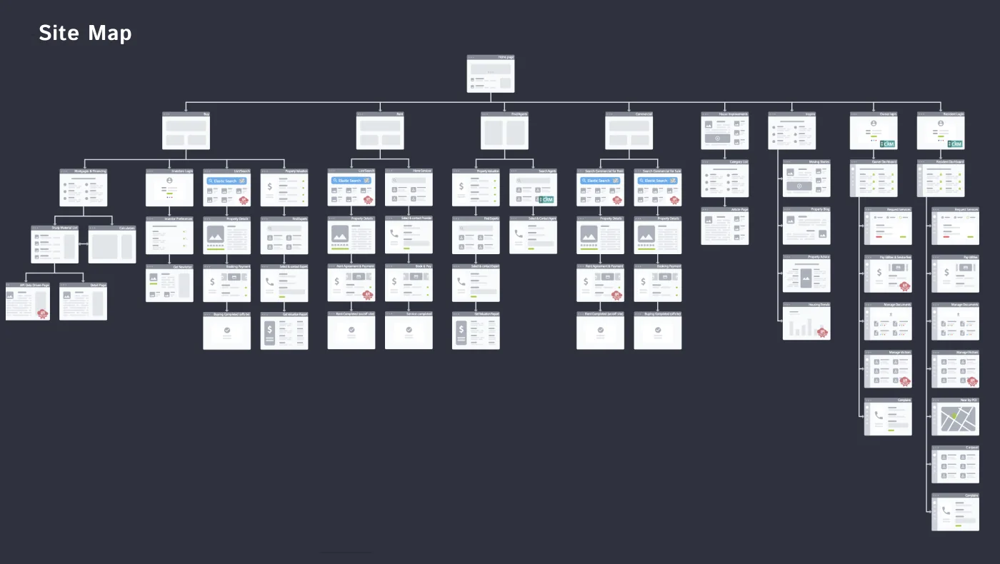
Early sitemap: buy, rent, agents, commercial, services, and owner and resident dashboards.
Discover 01
- Search with history
- For Sale / For Rent / International
- Villa, house, commercial, building
- Saudi and international picks
Map 02
- Price pins by area
- Swipeable cards over the map
- Switch to list view
Interests 03
- Saved properties
- Registered interest
- Messages with sellers
Pro workspace 04
- Dashboard & reports
- My properties & documents
- My agents & invitations
- Leads & notifications
Browse first, register when it's worth it
Anyone can search and browse without an account. The walkthrough speaks to both audiences, and registration asks one question first: are you a broker, an owner or a developer?
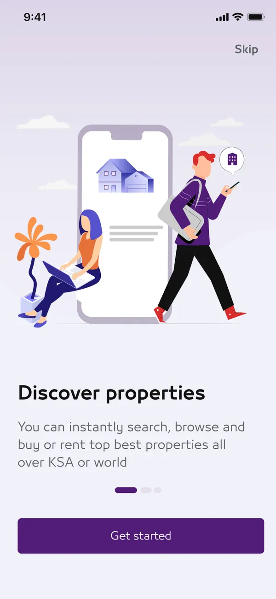
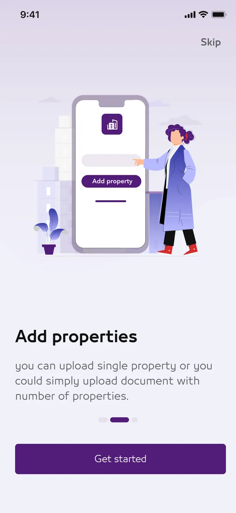
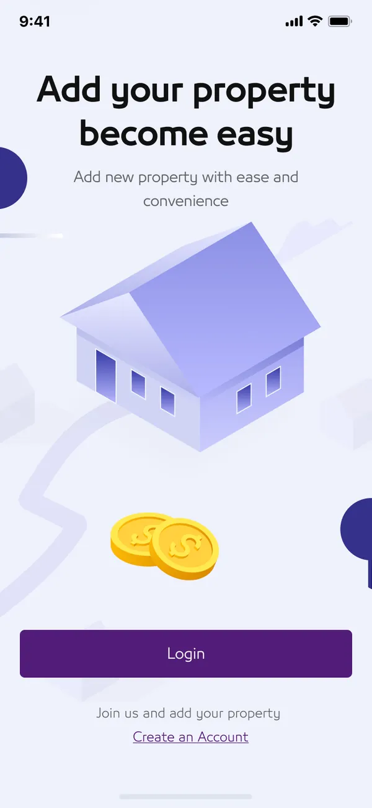
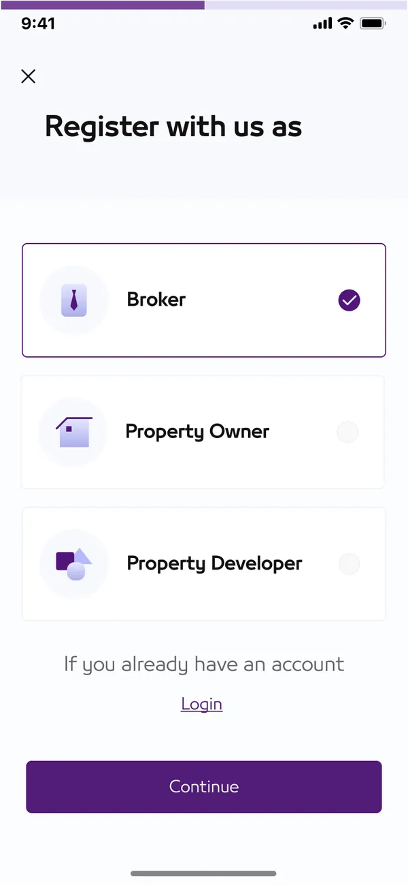
No login wall
Search, map and property details work signed out. Sign-in only appears when you register interest or list a property.
Role before form
Picking broker, owner or developer first means each sign-up asks only for what that role needs.
Two promises, two cards
The walkthrough gives each audience its own card, so neither feels the app isn't for them.
A search bar and three tabs, not ten dropdowns
Research showed that long filter forms put people off. Home opens with one search bar, For Sale / For Rent / International tabs and four property types. Detailed filters sit in a sheet, and every applied filter shows as a removable chip.
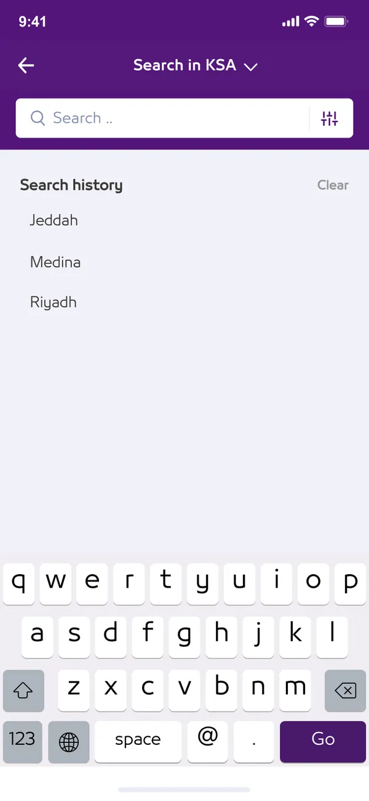
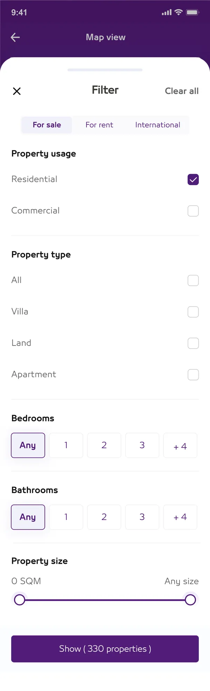
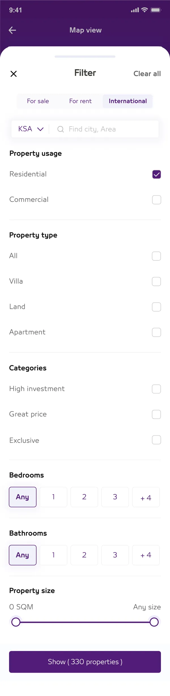
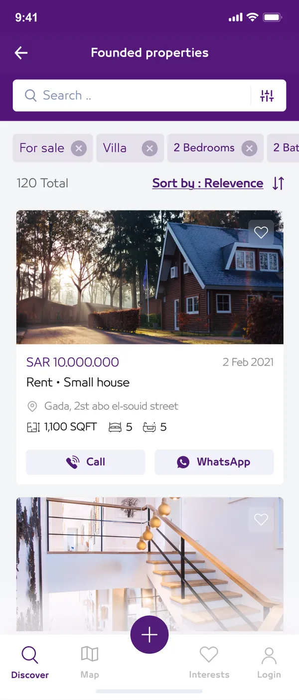
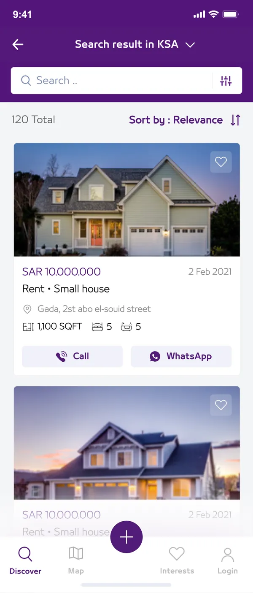
Tabs over dropdowns
Buy, rent or international is the first thing people decide, so it's always visible rather than hidden in a menu.
Chips show what's applied
A row of filter chips under the search bar makes it obvious why you see 120 results, and how to widen them.
Contact on the card
Call and WhatsApp buttons on every card turn browsing into a conversation without opening the listing.
Search by neighbourhood, not by street name
For a buyer like Abdul, location comes first: near schools, hospitals and family. The map shows prices as pins, with swipeable cards along the bottom and a one-tap switch to a list.
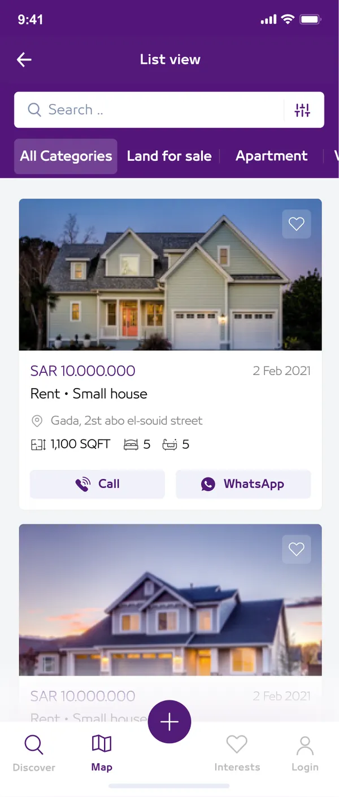
See it properly before you visit
The detail page answers the questions from our personas: what it really looks like, what's included, and what's nearby. Images, video and a 360 view sit in the first screen, and registering interest takes three fields.
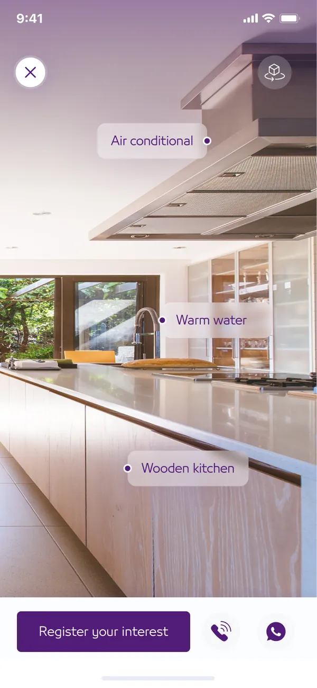
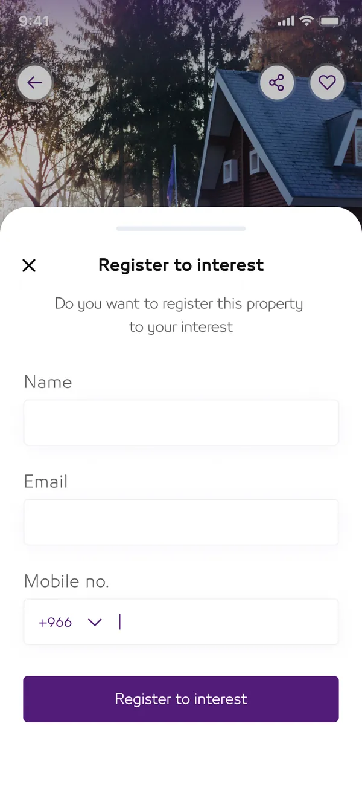
Media before price
Photos, video and 360 view lead the page, because trust in the photos was the top worry in research.
Interest, not a call
Registering interest sends a lead to the seller's dashboard, so a buyer can enquire at midnight without a phone call.
Report a listing
A "Report property" link on every listing gives people a way to flag fakes, which helps the platform earn trust.
A broker's whole week, in one dashboard
For Syed and his peers, the app replaces the phone log and the spreadsheet. The dashboard shows active listings, visits, click-through and leads, and every call, WhatsApp message or registered interest lands as a notification.
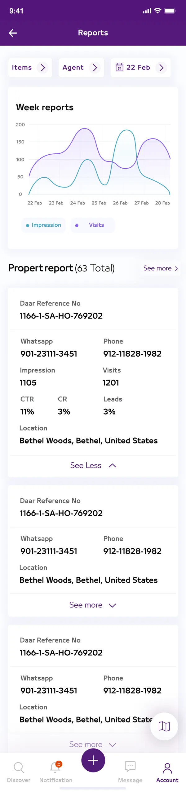
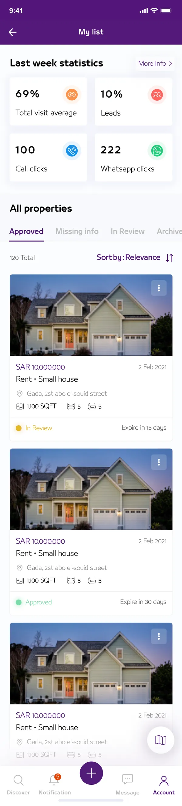
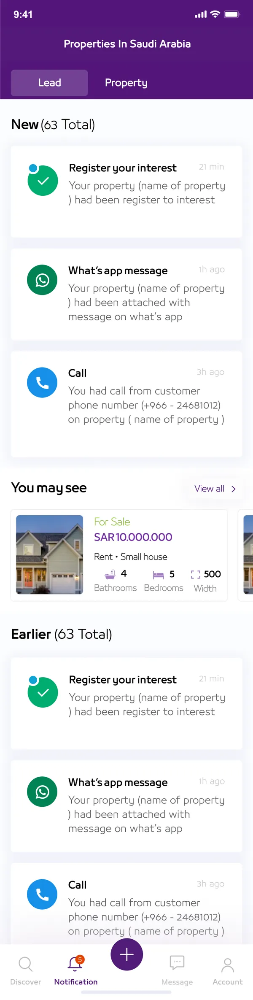
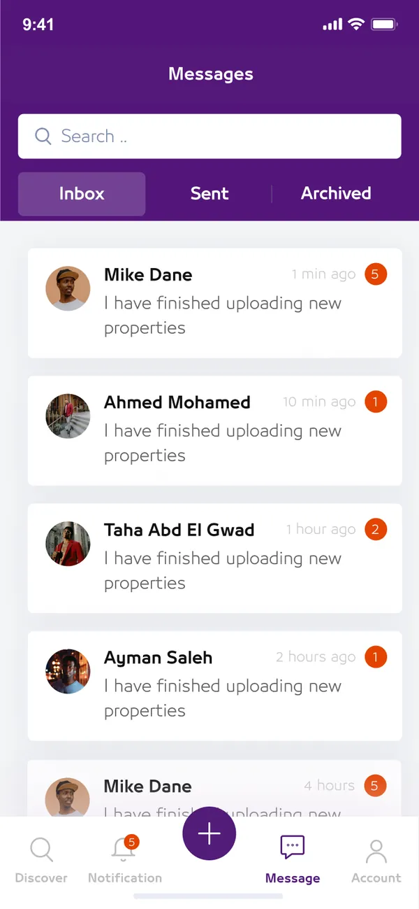
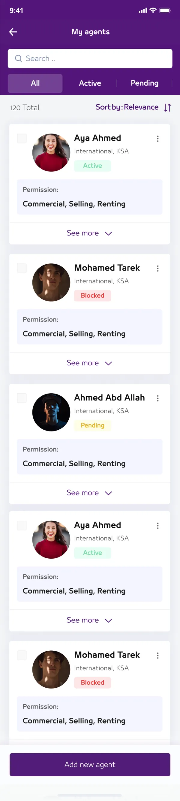
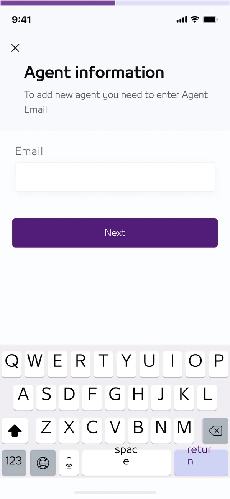
Count what brokers care about
Leads, calls and WhatsApp clicks sit next to views, so a broker can tell which listings actually make the phone ring.
Permissions per agent
Brokers and developers choose whether each agent can handle commercial, selling or renting, and can block access in one step.
Every lead has a source
Notifications name the property and the channel, so follow-up starts with context instead of "who is this?".
Nine short steps, or one upload for a whole portfolio
Listing one property is a nine-step wizard with a visible counter and Save on every step. Developers with dozens of units can upload a document instead and track each file's review status.
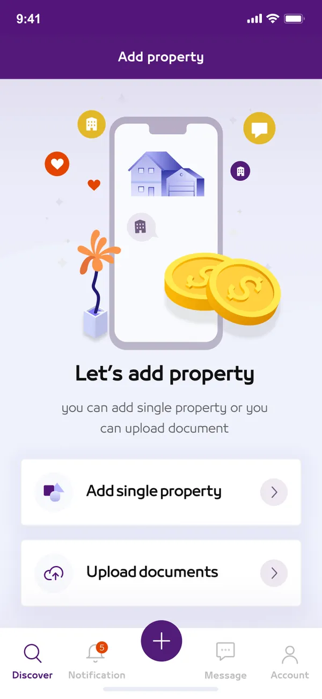
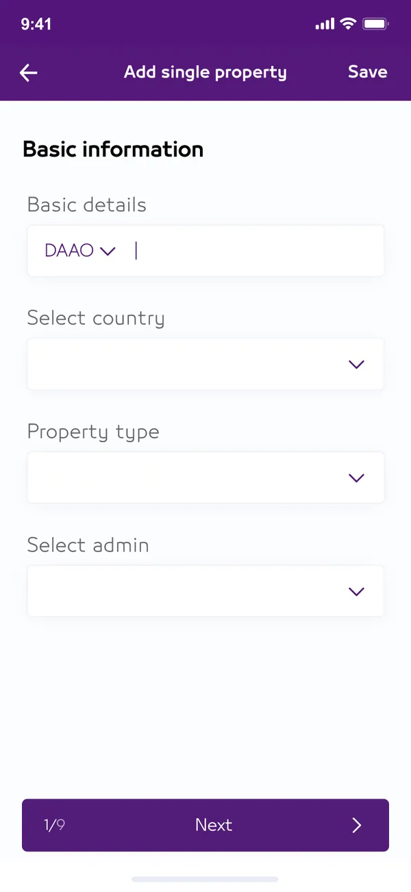
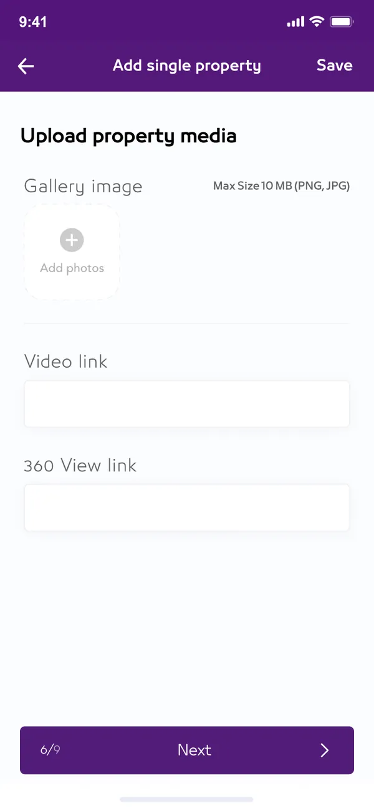
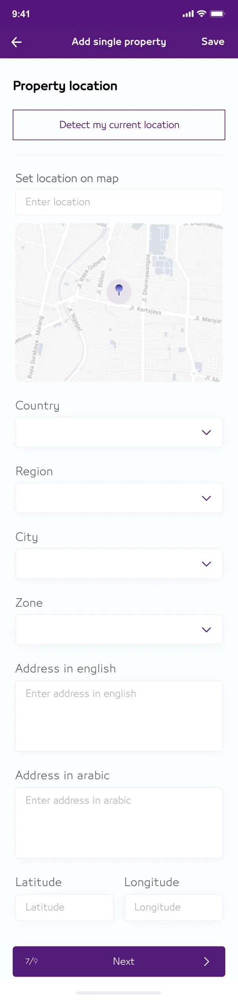
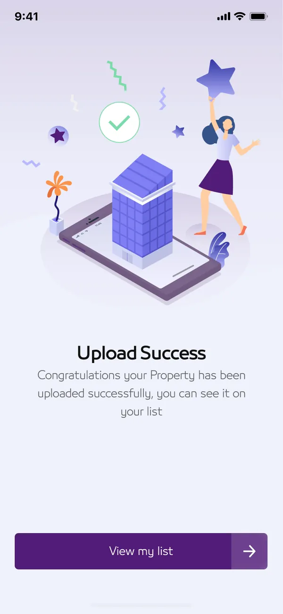
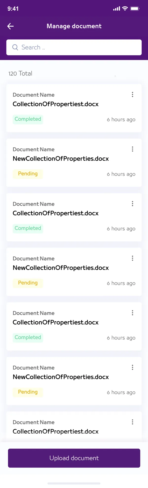
Mirrored, not just translated
The layouts were built so they could flip from left-to-right to right-to-left without redesign. Navigation, tabs, carousels, charts and back arrows all mirror, while numbers and prices keep their usual reading order.
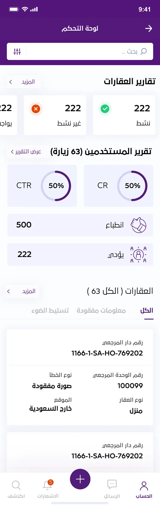
One deep plum, photos do the rest
A clean, light layout kept the code simple, the app fast on slow networks and the focus on the property photos, which Dar Al Arkan controls end to end.
#521C78 · primary#F1F1F9 · surfaces#FFFFFF · cards#25D366 · contact only#1A1A1A · textProperty card
Photo, save heart, price, type, address, size, bedrooms and bathrooms, then Call and WhatsApp. The same card appears on home, search, map and lists.
Filter sheet + chips
A bottom sheet with tabs for sale, rent and international, and chips under the search bar for whatever's applied.
Centre "+" action
A raised plum button in the tab bar. For professionals it adds a property; for everyone else it leads to registration.
What we delivered
A complete, bilingual app design for both sides of the market, mapped screen by screen into flows for handoff.
screens across end-user and professional flows
user roles served from one app and one design system
languages, English and Arabic, with full right-to-left layouts
regional property portals reviewed before the first wireframe
Design for both sides of the transaction. A buyer's "register interest" is only useful if it lands as a clear lead for the seller. Designing both ends together kept the two halves of the app consistent.
Plan for RTL from the first wireframe. Because the layouts were built to mirror from the start, the Arabic version was a set of careful checks rather than a redesign.
Competitor reviews earn their keep. Seven portals showed the same overloaded search form. That gave the team a shared reason to start simple.